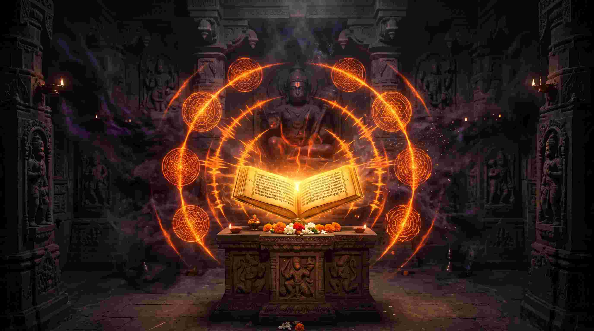
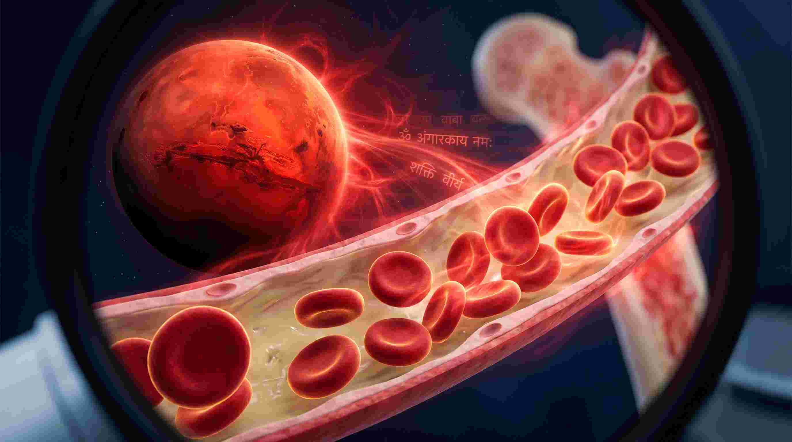

भारत में जब भी कोई व्यक्ति अचानक किसी भयंकर संकट में फंसता है, डिप्रेशन का शिकार होता है, या उसे रात में डर लगता है, तो उसके मुंह से सबसे पहला नाम 'हनुमान जी' का निकलता है। लेकिन क्या आपने कभी सोचा है कि ऐसा क्यों है? क्या यह केवल एक धार्मिक विश्वास है, या इसके पीछे मानव शरीर विज्ञान (Anatomy) और न्यूरोलॉजी का कोई गहरा रहस्य छिपा है?
एक मेडिकल छात्र और वैदिक ज्योतिषी होने के नाते, मैं हनुमान भक्ति को केवल प्रार्थना नहीं मानता। हनुमान जी 'पवनपुत्र' हैं—यानी वह ऊर्जा जो आपके फेफड़ों (Lungs) में ऑक्सीजन (Prana) बनकर दौड़ती है। ज्योतिष में, हनुमान जी का सीधा संबंध मंगल ग्रह (Mars) से है। मंगल आपके रक्त (Blood), अस्थि मज्जा (Bone Marrow), और एड्रेनालाईन हार्मोन (Adrenaline) का कारक है। जब आप हनुमान चालीसा या अंगारक स्तोत्र पढ़ते हैं, तो आप वास्तव में अपने शरीर की 'फाइट और फ्लाइट' (Fight or Flight) प्रतिक्रिया को हैक कर रहे होते हैं।
"बजरंग बाण और अंगारक स्तोत्र कोई साधारण कविताएं नहीं हैं; ये आपके नर्वस सिस्टम में जमे हुए 'भय' (Fear) और 'कर्ज' (Debt) के न्यूरल पाथवेज को तोड़ने वाले कॉस्मिक वेपन्स हैं।"
1. सम्पूर्ण हनुमान चालीसा: भय का न्यूरोलॉजिकल इलाज
गोस्वामी तुलसीदास जी द्वारा रचित 'हनुमान चालीसा' में 40 चौपाइयां हैं। आधुनिक ध्वनि विज्ञान (Cymatics) के अनुसार, जब आप इसे पढ़ते हैं, तो 'जय हनुमान ज्ञान गुन सागर' की ध्वनि तरंगें सीधे आपके अमिग्डाला (Amygdala)—मस्तिष्क का वह हिस्सा जो डर पैदा करता है—को शांत करती हैं। यह आपके 'प्राण' (श्वसन तंत्र) को लयबद्ध करती है, जिससे पैनिक अटैक (Panic Attacks) तुरंत रुक जाते हैं।
॥ दोहा ॥
श्रीगुरु चरन सरोज रज, निज मनु मुकुरु सुधारि।
बरनऊं रघुबर बिमल जसु, जो दायकु फल चारि॥
बुद्धिहीन तनु जानिके, सुमिरौं पवनकुमार।
बल बुद्धि बिद्या देहु मोहिं, हरहु कलेस बिकार॥
जय हनुमान ज्ञान गुन सागर।
जय कपीस तिहुं लोक उजागर॥ १ ॥
रामदूत अतुलित बल धामा।
अंजनि पुत्र पवनसुत नामा॥ २ ॥
महाबीर बिक्रम बजरंगी।
कुमति निवार सुमति के संगी॥ ३ ॥
कंचन बरन बिराज सुबेसा।
कानन कुंडल कुंचित केसा॥ ४ ॥
हाथ बज्र औ ध्वजा बिराजै।
कांधे मूंज जनेऊ साजै॥ ५ ॥
शंकर सुवन केसरी नंदन।
तेज प्रताप महा जग बंदन॥ ६ ॥
बिद्यावान गुनी अति चातुर।
राम काज करिबे को आतुर॥ ७ ॥
प्रभु चरित्र सुनिबे को रसिया।
राम लखन सीता मन बसिया॥ ८ ॥
सूक्ष्म रूप धरि सियहिं दिखावा।
बिकट रूप धरि लंक जरावा॥ ९ ॥
भीम रूप धरि असुर संहारे।
रामचंद्र के काज संवारे॥ १० ॥
लाय संजीवन लखन जियाये।
श्रीरघुबीर हरषि उर लाये॥ ११ ॥
रघुपति कीन्ही बहुत बड़ाई।
तुम मम प्रिय भरतहि सम भाई॥ १२ ॥
सहस बदन तुम्हरो जस गावैं।
अस कहि श्रीपति कंठ लगावैं॥ १३ ॥
सनकादिक ब्रह्मादि मुनीसा।
नारद सारद सहित अहीसा॥ १४ ॥
जम कुबेर दिगपाल जहां ते।
कबि कोबिद कहि सके कहां ते॥ १५ ॥
तुम उपकार सुग्रीवहिं कीन्हा।
राम मिलाय राज पद दीन्हा॥ १६ ॥
तुम्हरो मंत्र बिभीषन माना।
लंकेस्वर भए सब जग जाना॥ १७ ॥
जुग सहस्र जोजन पर भानू।
लील्यो ताहि मधुर फल जानू॥ १८ ॥
प्रभु मुद्रिका मेलि मुख माहीं।
जलधि लांघि गये अचरज नाहीं॥ १९ ॥
दुर्गम काज जगत के जेते।
सुगम अनुग्रह तुम्हरे तेते॥ २० ॥
राम दुआरे तुम रखवारे।
होत न आज्ञा बिनु पैसारे॥ २१ ॥
सब सुख लहै तुम्हारी सरना।
तुम रक्षक काहू को डर ना॥ २२ ॥
आपन तेज सम्हारो आपै।
तीनों लोक हांक तें कांपै॥ २३ ॥
भूत पिसाच निकट नहिं आवै।
महाबीर जब नाम सुनावै॥ २४ ॥
नासै रोग हरै सब पीरा।
जपत निरंतर हनुमत बीरा॥ २५ ॥
संकट तें हनुमान छुड़ावै।
मन क्रम बचन ध्यान जो लावै॥ २६ ॥
सब पर राम तपस्वी राजा।
तिन के काज सकल तुम साजा॥ २७ ॥
और मनोरथ जो कोई लावै।
सोई अमित जीवन फल पावै॥ २८ ॥
चारों जुग परताप तुम्हारा।
है परसिद्ध जगत उजियारा॥ २९ ॥
साधु संत के तुम रखवारे।
असुर निकंदन राम दुलारे॥ ३0 ॥
अष्ट सिद्धि नौ निधि के दाता।
अस बर दीन जानकी माता॥ ३१ ॥
राम रसायन तुम्हरे पासा।
सदा रहो रघुपति के दासा॥ ३२ ॥
तुम्हरे भजन राम को पावै।
जनम जनम के दुख बिसरावै॥ ३३ ॥
अंत काल रघुबर पुर जाई।
जहां जन्म हरि भक्त कहाई॥ ३४ ॥
और देवता चित्त न धरई।
हनुमत सेई सर्ब सुख करई॥ ३५ ॥
संकट कटै मिटै सब पीरा।
जो सुमिरै हनुमत बलबीरा॥ ३६ ॥
जय जय जय हनुमान गोसाईं।
कृपा करहु गुरुदेव की नाईं॥ ३७ ॥
जो सत बार पाठ कर कोई।
छूटहि बंदि महा सुख होई॥ ३८ ॥
जो यह पढ़ै हनुमान चालीसा।
होय सिद्धि साखी गौरीसा॥ ३९ ॥
तुलसीदास सदा हरि चेरा।
कीजै नाथ हृदय मंह डेरा॥ ४० ॥
॥ दोहा ॥
पवन तनय संकट हरन, मंगल मूरति रूप।
राम लखन सीता सहित, हृदय बसहु सुर भूप॥

2. बजरंग बाण: आपातकालीन (Acute Emergency) स्थिति का अस्त्र
जब स्थितियां नियंत्रण से बाहर हो जाएं—जैसे कोई भयंकर बीमारी, झूठा कोर्ट केस, या अचानक शत्रुओं का हमला—तब बजरंग बाण का प्रयोग किया जाता है। इसमें तांत्रिक बीजाक्षरों (जैसे 'ॐ चं चं चं चं चपल चलन्ता') का प्रयोग होता है जो शरीर में तुरंत भयंकर ऊर्जा (Heat/Pitta) पैदा करते हैं। इसे रोज सामान्य पूजा में पढ़ने के बजाय, केवल विशेष संकट के समय अनुष्ठान के रूप में पढ़ा जाना चाहिए।
॥ दोहा ॥
निश्चय प्रेम प्रतीति ते, बिनय करै सनमान।
तेहि के कारज सकल शुभ, सिद्ध करै हनुमान॥
॥ चौपाई ॥
जय हनुमन्त सन्त हितकारी। सुनि लीजै प्रभु अरज हमारी॥
जन के काज विलम्ब न कीजै। आतुर दौरि महा सुख दीजै॥
...
ॐ चं चं चं चं चपल चलन्ता। ॐ हनु हनु हनु हनु हनुमन्ता॥
ॐ हं हं हांक देत कपि चञ्चल। ॐ सं सं सहम पराने खल दल॥
...
यह बजरंग बाण जो जापै। तेहि ते भूत प्रेत सब कांपे॥
धूप देय अरु जपै हमेशा। ताके तन नहिं रहे कलेशा॥
3. संकट मोचन हनुमानाष्टक: मानसिक शांति का अमृत
जब व्यक्ति डिप्रेशन, दुख या किसी गहरे सदमे (Trauma) से गुजर रहा हो, तो अष्टक का पाठ करना चाहिए। इसके श्लोक (मत्तगयन्द छन्द) बहुत ही संगीतमय और मधुर हैं। जब आप इसे गाते हैं, तो यह डोपामाइन (Dopamine) और एंडोर्फिन (Endorphin) को रिलीज करता है, जिससे रोता हुआ इंसान भी मानसिक शांति पा लेता है।
बाल समय रवि भक्षि लियो तब तीनहुँ लोक भयो अँधियारो।
ताहि सों त्रास भयो जग कोयह संकट काहु सों जात न टारो।
देवन आनि करी बिनती तब छाँड़ि दियो रबि कष्ट निवारो।
को नहिं जानत है जग में कपि संकटमोचन नाम तिहारो॥ १ ॥
...
काज कियो बड़ देवन के तुम बीर महाप्रभु देखि बिचारो।
कौन सो संकट मोर गरीब को जो तुमसों नहिं जात है टारो।
बेगि हरो हनुमान महाप्रभु जो कुछ संकट होय हमारो।
को नहिं जानत है जग में कपि संकटमोचन नाम तिहारो॥ ८ ॥

4. अंगारक स्तोत्र (Angarak Stotram): मंगल दोष और कर्जे का रामबाण इलाज
मंगल ग्रह को संस्कृत में 'अंगारक' (आग के अंगारे जैसा) या 'भौम' कहा जाता है। मेडिकल एस्ट्रोलॉजी में, यदि मंगल नीच का हो या खराब स्थिति में हो, तो व्यक्ति के रक्त (Blood) में हीमोग्लोबिन की कमी (Anemia), बार-बार चोट लगना (Accidents), और सबसे बढ़कर, व्यक्ति पर भारी कर्ज (Debt) चढ़ जाता है।
स्कंद पुराण से लिया गया यह अंगारक स्तोत्र मंगल ग्रह की ऊर्जा को शांत करता है। जो व्यक्ति मंगलवार को इसका पाठ करता है, उसका रुका हुआ धन वापस आता है, कर्जा खत्म होता है, और अस्थि मज्जा (Bone Marrow) से जुड़ी बीमारियां दूर होती हैं।
अङ्गारकः शक्तिधरो लोहिताङ्गो दरासुतः।
कुमारो मङ्गलो भौमो महाकायो धनप्रदः॥ १ ॥
अर्थ: मंगल देव शक्ति धारण करने वाले, लाल वर्ण वाले (लोहितांग) और धरती के पुत्र (भौम) हैं। वे कुमार, मंगलकारी और বিশাল शरीर वाले होकर धन देने वाले हैं।
ऋणहर्ता दृष्टिकर्ता रोगकृत् रोगनाशनः।
विद्युत्प्रभो व्रणकरः कामदो धनहृत् कुजः॥ २ ॥
अर्थ: वे ऋण (कर्ज) का नाश करने वाले, रोग उत्पन्न करने वाले और रोगों का नाश करने वाले भी हैं। वे बिजली के समान तेजस्वी हैं और इच्छाओं (काम) को पूर्ण करने वाले हैं।
सामगानप्रियः रक्तवस्त्रो रक्तायतलोचनः।
लोहितो रक्तवर्मा च सर्वकर्मविबोधकः॥ ३ ॥
अर्थ: वे सामगान के प्रिय हैं, लाल वस्त्र और लाल कवच धारण करते हैं। उनकी आँखें लाल और विशाल हैं, और वे सभी कर्मों को पूर्ण रूप से समझने वाले हैं。
रक्तमाल्यधरः हेमकुण्डली गृहनायकः।
नामान्येतानि भौमस्य यः पठेत् सततं नरः॥ ४ ॥
अर्थ: वे लाल फूलों की माला और सोने के कुंडल धारण करते हैं। जो मनुष्य इन नामों का निरंतर पाठ करता है—
ऋणं तस्य च दारिद्र्यं दैन्यं चैव विनश्यति।
धनं प्राप्नोति विपुलं स्त्रियम् चैव मनोरमाम्॥ ५ ॥
अर्थ: उसका ऋण (कर्ज), दरिद्रता और दुःख सब नष्ट हो जाते हैं। उसे बहुत धन की प्राप्ति होती है और सुंदर व स्नेहिल जीवनसाथी का सौभाग्य मिलता है।
वंशोद्धायकं पुत्रं लभते नात्र संशयः।
यः पूजयेत् भौमं दिनं मङ्गलवासनम्॥ ६ ॥
निष्कर्ष: ज्योतिष तर्क का दृष्टिकोण
जब आप डिप्रेशन, कर्ज (Debt), या स्वास्थ्य की समस्याओं से घिरे होते हैं, तो आपका शरीर भारी मात्रा में कॉर्टिसोल (Cortisol - Stress Hormone) छोड़ता है। हनुमान भक्ति और अंगारक स्तोत्र का अनुष्ठान केवल भगवान को खुश करने के लिए नहीं है; यह एक 'न्यूरो-लिंग्विस्टिक प्रोग्रामिंग' (NLP) है।
जब आप मंगलवार की सुबह लाल कपड़े पहनकर, रीढ़ की हड्डी सीधी रखकर (Spine straight) इन स्तोत्रों का सस्वर पाठ करते हैं, तो आप अपने 'ब्लड फ्लो' (Blood Flow) और 'नर्वस सिस्टम' (Nervous System) में मंगल की असीमित ऊर्जा (Fire) भर रहे होते हैं। यही ऊर्जा आपको किसी भी बीमारी, कर्ज और संकट से बाहर खींच लाने की ताकत रखती है। जय श्री राम!